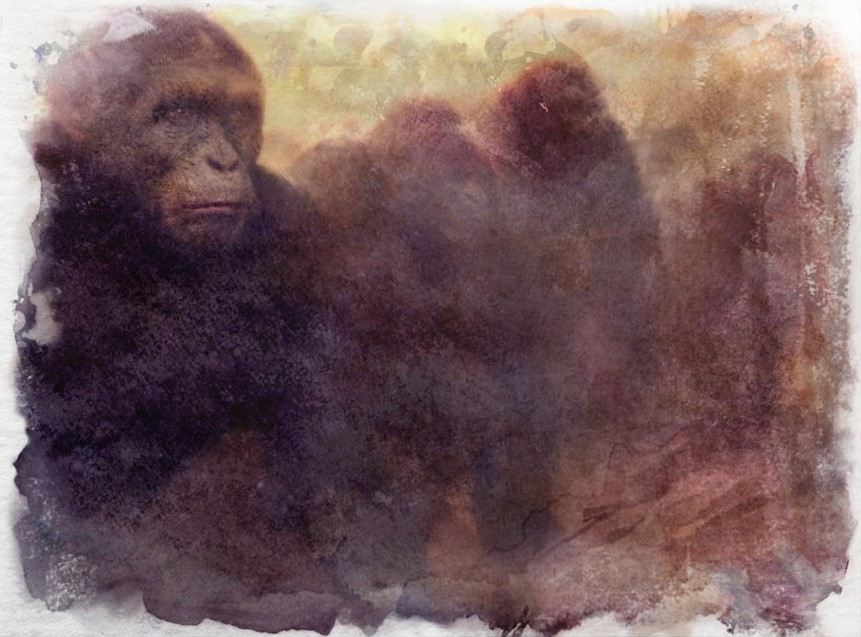

The Awakening
The Awakening saw some of the creatures of elemental spheres slowly transform thanks to the celestial energies that flowed through those worlds. Bears, wolves and countless others gradually evolved into a state of self-awareness, beginning to think beyond the simple need for food and shelter. Their bodies also began to change during this time as well, many became bipedal over countless generations. But not all animals were changed, and so the Awoken, as they came to be called, found their counterparts in the wild - bear against bear, wolf against wolf; one still a beast, the other something more. For all cultures, the awakening became the genesis of their societies.